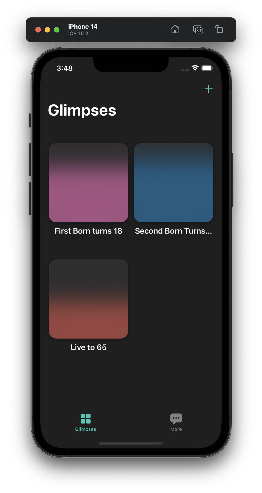
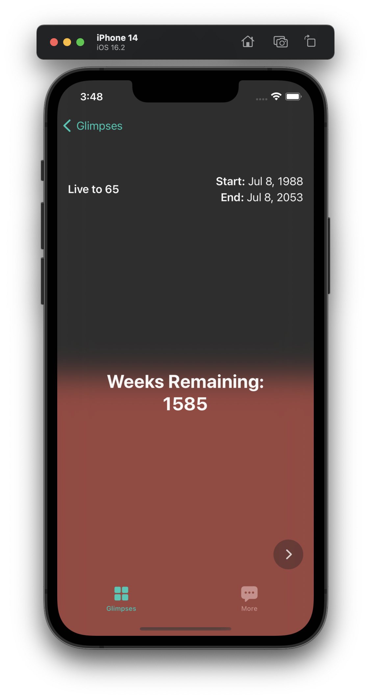
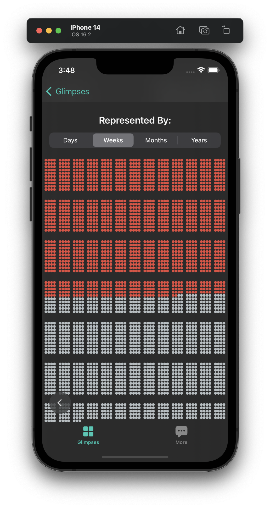

Goals are… hard.
After January came around and kicked 2022 into last year, I started thinking a lot about the future. Like most people do, I wanted to set some resolutions. Not traditional resolutions though, like "I resolve to read more, so, by the end of 2023 I'll have read 40 books".
I'm talking about long–term, life-altering, big resolutions.
Like: "I resolve to be a patient, generous, loving, and courageous husband and father. By the time my daughters turn 18, they will have learned to be strong, independent, faithful, hard-working, joyful and generous. By the time I turn 65 I'll be proud of the decisions I've made, people will say they were honored to know me and my life will glorify God."
I resolve to be a patient, generous, loving, and courageous husband and father. People will say they were honored to know me and my life will glorify God.
Here's the thing though…
I suck at keeping resolutions. Especially the life-altering long-term ones.
Why though?
Why are long-term goals or life-changing resolutions so… impossible?
I've been thinking about that for a while. I've observed myself (and others) both finish strong and fall short of the goal.
What I've found is this:
The long-term resolutions that work, only worked because the person had maintained urgency and drive toward the goal.
Long-term resolutions only work because of maintained urgency and drive toward the goal.
That's why short-term goals are so much easier to finish. Because you only have to keep your attention focused for a short time. For long-term goals to succeed, you need to continue to focus on them, especially after you're peppered with distractions.
Okay, so… How?
I've got a good answer for that, but before I get there, I need to explain my thinking a little. Let's look at some of my successes and failures in this arena.
Great success!
I've held to—and gained from—several long-term resolutions or goals. Like:
- Learn to code and switch careers
- Pay off all of our debt (~$90,000)
- Save 3 months' worth of my family's expenses for emergencies
Those were relatively easy to stick to. I think there are a few reasons for that. First, the end was well-defined. That made it pretty easy to visualize how things would be different. It also paved the way for the second thing, there was hope for a brighter future on the other end. Third, and probably most compelling, there was a fear of failing that made it feel like a real threat to our mental and spiritual health if we didn't succeed.
Of those goals, the hardest to accomplish was learning a new craft and switching careers. I had no support system or mentors in technology, and no freaking idea what I was doing. But the fear of failure and the hope for the future heavily outweighed the uncertainty and the discomfort. This took me six years to accomplish.
The other 2 financial goals were pretty difficult too. But, we had a support system and people to keep us on track, so we did it pretty quickly, it only took us three years.
Those goals were easy because: 1. They were well defined 2. I had hope for the future 3. I had a large fear of failure.
Failure…
Like I said, I suck at long-term goal-keeping. I could probably fill a spiral notebook with all the times I've started a long-term goal and forgotten about it. But for brevity, we'll talk about some common ones.
- Loose weight and keep it off
- Learn a new language and be fluent
- Write a book
- Create that App I've been talking about forever
You get the point. All of these goals had some of the qualities that made the successful goals easy for me, but none of them had all three.
Losing weight was well-defined, and I had hope for the future, but I didn't have a fear of failure. I'm in good health, married with kids, and I'm not competitive or vain in that regard… so not doing a workout for a day or two wouldn't bother me.
There was nothing to light the fuel underneath me and keep me focused. It didn't take long for the habit to die out and other "more important" things to fill in the space. The same is true for all of the other examples I gave. I had no urgency
Urgency
That's the differentiator.
That's what made the successful goals attainable and the others fail.
Having hope for the future and great fear of failure, as well as having access to a support system that kept the goal top-of-mind provided me with the urgency I needed to succeed.
So, that's the trick. Manufacture urgency. Get yourself psyched up to have hope for what comes after you win, fear what will happen if you don't and find a way to keep the goal on the top of your mind and hold yourself accountable.
Easy right?
Well, it isn't easy for me. So that's why I'm making an app to help me with it.
Foresight
Foresight is an app that is meant to help you easily visualize how much time you have left on your long-term resolutions or goals. Here are a few images of what it looks like:
It's in its earliest stages of development and is currently in beta testing on Apple's TestFlight. And I need more testers. If you're interested in testing the app and providing me feedback, find me on LinkedIn and send me a message, and I'll send you an invite.